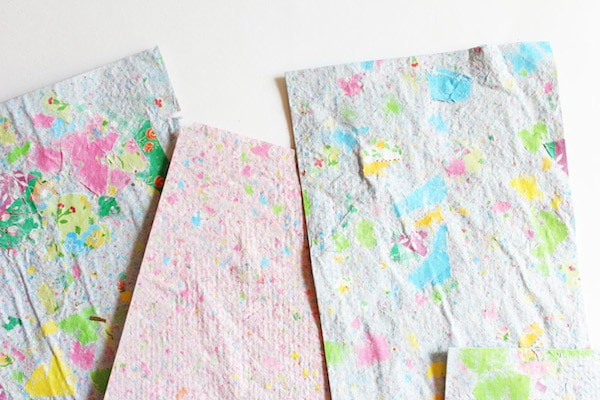
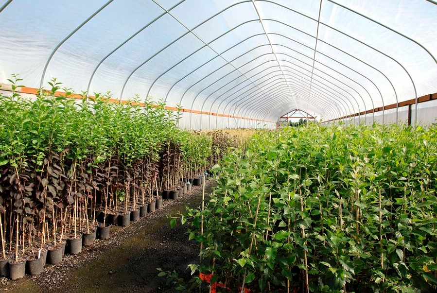
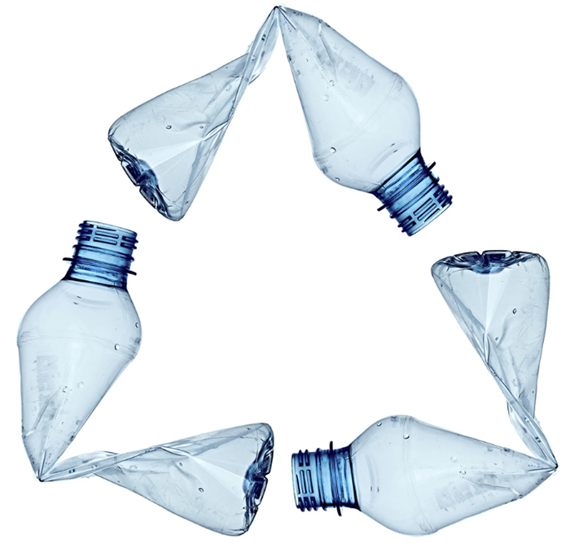

Contaminación en México
Como consecuencia de varios siglos de actividad minera en México y posteriormente, debido a la industria de la química básica, petroquímica y de refinación del petróleo, se han producido cantidades muy grandes, pero muy difíciles de cuantificar, de residuos peligrosos. Aunado a lo anterior, la intensa actividad de otras industrias, junto con accidentes durante el almacenamiento, transporte o trasvase de sustancias (fugas, derrames, incendios) y la disposición clandestina e incontrolada de residuos, contribuyen en gran medida a la contaminación de suelos (SEMARNAT, 2002). El número de sitios contaminados, aún en las estimaciones más conservadoras, asciende a varios miles de lugares cuyo riesgo potencial es desconocido. De acuerdo con datos publicados por el INEGI (2000), la superficie de suelo degradado por causas de contaminación en 1999 fue de 25,967 km2.
Todos los eventos en los que se encuentran involucradas sustancias que implican algún riesgo para el ambiente o la población y que puedan generar la contaminación de suelos y cuerpos de agua, son conocidos como emergencias ambientales. De acuerdo con estadísticas de la Procuraduría Federal de Protección al Ambiente (PROFEPA), cada año se presentan en México un promedio de 550 emergencias ambientales asociadas con materiales y residuos peligrosos. Dentro de los compuestos peligrosos más comúnmente involucrados en emergencias ambientales, se encuentran el petróleo y sus derivados (gasolinas, combustóleo, diesel), agroquímicos, gas LP y natural, entre otros
La contaminación es un problema que desde hace más de 20 años afecta a la Ciudad de México. Es un fenómeno que ha ido crecido geográficamente –cada vez abarca más zonas aledañas a la capital del país e incluso ciudades de otros estados, como Monterrey y Guadalajara– y que, sin duda alguna, no ha sido resuelto.
Este año, el Valle de México vivió una de las contingencias más largas de las que se tenga registro. Fueron nueve días –del lunes 15 de mayo al miércoles 24 del mismo mes, exceptuando el domingo 20– en los que los niveles de contaminación superaron los 150 puntos IMECA (índice de calidad del aire), provocando así la activación de la Fase 1 de contingencia ambiental por ozono.
Las medidas que se han puesto en marcha para solucionar de fondo el problema de la contaminación no han funcionado y esto se debe a que la mayoría de ellas han sido acciones paliativas y aisladas que, lejos de beneficiar o corregir la situación, solo afectan a la población en diferentes formas.
Programas como el Hoy No Circula constituyen medidas reactivas que muestran una intención por solucionar el problema, pero solo de forma temporal; se enfocan en corregir o reducir los niveles de contaminación por uno o dos días, sin trabajar en un plan permanente.
En ese sentido, es urgente recalcar la necesidad de implementar una estrategia preventiva y funcional que ataque el problema desde sus orígenes. De lo contrario, el tema seguirá siendo tratado con medidas paliativas, sin buenos resultados.
cuidados del medio ambiente en Salamanca gto
En este artículo, se presentan formas sencillas en que se puede ayudar al medioambiente e información sobre el cuidado de este mismo.
El medio ambiente es diariamente dañado por nosotros mismos y en la mayoría de las ocasiones ni siquiera somos conscientes de ello. Claro ejemplo de esto es la cantidad de basura que vemos diariamente en las calles y que contribuimos a ensuciarlas ocasionalmente, así como también deshechar aparatos electrónicos o baterías sin saber realmente cómo es que se debe de hacer.
Para hacer correctamente esto último se debe separar y clasificar los componentes de los equipos de cómputo antiguos, es decir, “separar las partes útiles de las computadoras y periféricos, tarjetas de video, tarjetas de red, motherboard, procesadores, puertos USB, modems, fuente de poder, discos duros, memoria, cables, conectores de drives, chasis, etc.”, para evitar en lo posible los efectos adversos para el medio ambiente relacionados por el destino final en basureros de los componentes antes mencionados. Para ello, el gobierno mexicano está promoviendo el negocio de reciclado, sobre todo, aunque también promueve leyes para exhortar a los ciudadanos a que procesen correctamente su basura individual.
Nuestro objetivo al hacer este artículo es informar a los visitantes de la página sobre el irrebersible daño que causamos al medio ambiente, crear consciencia sobre la contaminación, ya sea consciente o inconsciente.
Y mostrar los proyectos de nuestros compañeros de 4°F, así mismo dando una idea a las personas que estén interesadas en ayudar al medio ambiente.
RECICLAJE DE PAPEL
La Importancia Del Reciclado De Papel
El reciclaje del papel es importante porque permite reducir la cantidad de árboles que se tienen que talar para fabricar papel. Demedia, por cada tonelada de papel y cartón que se recicla, se evita la tala de 18 árboles. El papel vino para quedarse y aunque cada día usamos menos cantidades de este material -por ejemplo, hoy en día ya no se escriben cartas y cada vez son más personas las que prefieren leer en sus dispositivos electrónicos- su uso sigue siendo muy importante en todo el mundo. Este uso tiene ciertas implicaciones ambientales que quizá no conocías. Con tan solo el pequeño gesto de elegir bien el contenedor al que arrojas el papel y cartón la próxima vez, puedes ayudar a hacer del mundo un lugar un poco mejor. Por ello, en este artículo te mostramos algunas razones por las que es importante reciclar papel.
- La producción de papel está estrechamente relacionada con la tala de árboles. Se estima que la pérdida anual neta de superficie forestal se sitúa cerca de los 7,3 millones de hectáreas anuales, un área equivalente a Sierra Leona o Panamá. Reciclando papel estarás contribuyendo directamente a ayudar a recuperar las masas forestales de nuestro planeta.
- En muchos lugares la Tierra, los bosques y otros ecosistemas propios de cada lugar, y los cuales son los que mejor se adaptan a las cualidades ecológicas de su entorno, son todavía sustituidos por plantaciones de árboles de crecimiento rápido para la industria del papel. Tan solo con un fin económico.
- El papel representa el 18% de los residuos que generamos cada día. En España, cerca de un 40% de los artículos elaborados a base de papel y cartón acaba en el vertedero, una cifra muy superior a la que registran otros países europeos.
- Una tonelada de papel reciclado equivale a salvar la vida de 17 árboles adultos.
- Al fabricar papel reciclado a partir de papel que ya ha sido usado, es posible ahorrar hasta un 60% de la energía empleada para fabricar el papel directamente de la celulosa.
Consecuencias Del Medio Ambiente Por El Alto Consumo Del Papel
El papel está por todas partes. Tiene un sinfín de aplicaciones que usamos (y a menudo
abusamos) continuamente en nuestra vida diaria. Y todo ello sin ser verdaderamente
conscientes del negativo impacto medioambiental que tiene. Empezando por la tala de
árboles, pasando por su fabricación y hasta su consumo, que muchas veces llega a ser
desmedido. Según Greenpeace, el 40% de la madera tallada para uso industrial se usa para
fabricar papel. Cada año se pierden unos 15.000 millones de árboles y de continuar así, en
300 años habrán desaparecido por completo. A ello se suma la pérdida de hábitat para
especies protegidas, desaparición de flora en vías de extinción o el daño que eso supone al
equilibrio del ciclo
- En la fabricación de papel se consumen grandes cantidades de agua y energía. Se trata de una industria que hace un uso intensivo de los medios de transporte, lo que deja una elevada huella de carbono.
- Es uno de los mayores contaminantes del agua y del aire.
- Es una de las que más gases efecto invernadero emite, alrededor de 3,3 kg de CO2 equivalente por cada kilo de papel.
- En el blanqueo de la pasta se utiliza el cloro, que es muy nocivo para la salud de las personas y para el medio ambiente.
Reducir El Consumo De Papel
Una sola hoja de papel puede ser insignificante. Sin embargo, el uso de miles de hojas al día
causa un grave daño al medio ambiente. La tala de árboles significa un deterioro para
bosques, la supervivencia de ciertas especies e incluso para el clima de nuestro planeta,
dado que los árboles son los responsables de transformar el dióxido de carbono en oxígeno,
y contribuyen a evitar así el efecto invernadero. En la producción de papel que llega a
nuestras escuelas, se utilizan varios elementos químicos, entre ellos el cloro, que tiene una
incidencia medioambiental en ríos, mares, plantas y animales. Reducir, reutilizar y reciclar as hojas que utilizamos en colegios y escuelas es primordial. Si somos capaces de reciclar
una tonelada de papel, estaremos salvando la vida a 17 árboles.
Y para reducir el consumo de papel empezar como, por ejemplo:
- Aprovechar ambos lados de la hoja al utilizar cuadernos o papel sucio.
- No tirar el papel, sino reciclarlo después de utilizar ambas caras.
- Comprar papel reciclado y no procesado con cloro para su blanqueo.
- Facilitar el reciclaje colocando cestos o carpetas en salas y oficinas.
- Promover la producción de papel reciclado «casero» entre amigos.
Para leer más sobre este proyecto, hacer click en este enlace
RECICLAJE DE PAPEL PARA LA PRODUCCIÓN DE NUEVAS HOJAS
Como ya se mencionó en el anterior proyecto, el reciclaje de papel es fundamental, ya que es una gran carga ecológica el desecho de este mismo material, tan sólo pensar por cada tonelada de papel se requiere la tala de 17 robles y la cantidad de papel que se desecha cada año se logra sumar una cantidad preocupante de papel desechado.
Este proyecto realizado por alumnos de 4°J se llevó a cabo por el problema inicial de la tala de árboles y el consumo
Está planteado el reciclaje, para esto se tuvo que hacer una recolección de papeles y comprar otros materiales para poder reciclarlo, utilizarlo de nuevo. Para este proyecto se necesitaron semanas de trabajo duro por parte de los estudiantes
Para leer más sobre este proyecto, hacer click en este enlace
VIVERO ECOLÓGICO
En este proyecto llevado a cabo por alumnos de 4°E se lleva a cabo una preservación de un vivero en la institución, este proyecto nació y se planteó debido a que el vivero se encontraba en un muy mal estado por la cuestión de mantenimiento escaso o nulo, además de la falta de recursos para llevarlo a cabo.
Se necesitan áreas en las que se promueva la conservación de plantas y los alumnos tengan un mayor acercamiento a la flora, para esto se elaboró un plan de actividades que facilitarán este objetivo.
En un vivero automatizado se puede aumentar la cantidad, calidad y efectividad de la producción. Esto porque es a través de ellos que se pueden resolver problemas no sólo climáticos, sino de uso más eficiente de agua, nutrientes y controlar mejor las plagas y enfermedades además de volver más eficiente el cultivo. Si se promueve el uso de la automatización de los invernaderos, el riesgo de intoxicación de los trabajadores por pesticidas sería considerablemente resuelto. También este proyecto busca beneficiar directamente tanto al sistema de cultivo tradicional (campo abierto) como al sistema de ambiente controlado.
Para leer más sobre este proyecto, hacer click en este enlace
RECICLAJE DE PET
El problema que se tratará, fue identificado por alumnos del grupo de 4°F, y es que investigaciones recientes han encontrado que el mayor problema de la mala disposición de estos materiales es que se fragmentan y producen cientos de partículas y micropartículas que no se reincorporan a los ciclos de naturaleza y quedan como micro plásticos que contaminan sino visualmente el ambiente.
Llevararon a cabo una campaña para recolección de botellas y de este modo ejecutar su proyecto.
Su objetivo es contribuir a la preservación del medio ambiente, afianzando la cultura del reciclaje, al cuidado de los recursos naturales y su problema a través de darle un nuevo uso al pet, y de este modo contribuir a la protección del medio ambiente.
